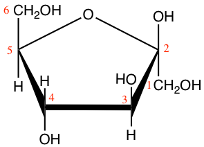
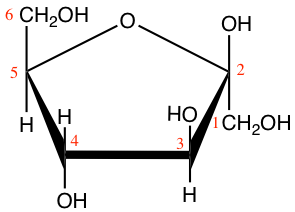
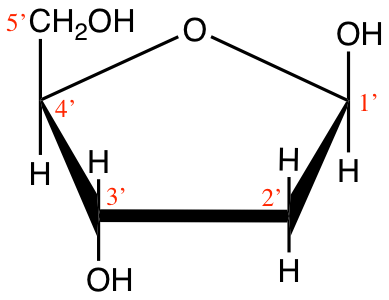

Chapter 3 Life’s secrets to make complex organic molecules
3.1 Polymers of simple monomers
When scientists of the 18th century observed nature, they thought there had to be major differences between animated organisms and the inanimate ones. In fact they thought that the elements at the basis of the animated vs. inanimate things had to be different. One can only wonder at the incredible diversity and complexity of forms between a bacterium and humans, and between unicellular algae and sequoia trees! And yet, despite the incredible variations of life forms and sizes, there is a common theme: very complex organic molecules are polymers of relatively simple monomers.
In the image of a brick wall and the skyscraper in Figure 3.1, it is possible to make a small wall or a huge skyscraper. Brick walls are made of bricks and of mortar to hold the bricks together. If one adds metal pieces, wood, etc. the complexity of the final product can be infinite, yet it is made from simple elementary pieces.
Figure 3.1: Small and large structures can be built from the addition of bricks, one at a time
Living organisms are essentially made of very complex polymers, but which are all built from simple monomers. Just like in a building which complexity results from the assemblage of different types of material, e.g., bricks, wood, metal, etc., living organisms are assembled from distinct ‘types of molecules’. Among the very complex organic polymers, one can distinguish four molecular families (in addition to what we refer to as co-enzymes), where in each family, there is a repeated pattern. A molecular family can be defined as
- polymers of similar monomers within a family but distinct between families
- a mortar or chemical bonds which binds monomers together
The four molecular families that make organic molecules include:
- Carbohydrates
- Proteins
- Nucleic acids
- Lipids
3.2 Carbohydrates
Carbohydrates form the entry molecules onto which electrons are first stored in photosynthesis, and precisely on the carbon atoms. The generic formula for carbohydrates is (CH2O)n, and each atom, on average, has 4 electrons for itself as illustrated in Figure 3.2. We have seen in the previous chapter that having 4 electrons stored on each C is probably the most cost effective way to store many electrons on organic molecules.
Figure 3.2: Electron allocation of a generic carbohydrate (CH2O)n
3.2.1 Monosaccharides
The monomers of carbohydrates are called monosaccharides (from Greek monos, i.e., single, and sacchar, sugar) or sometimes called simple sugars or oses (from the Latin “full of, abounding in, having qualities of”). They are generally made of 3 to 6 carbons (there actually are C7 to C9 oses) and are classified in aldoses or ketoses, depending on whether they have a aldehyde (-CHO) at the end or a ketone (C=O) radical. They are either represented in linear chains (or Fischer projection) like in Figures 3.3 and 3.4, or in cyclic chains.
The goal here is not to know these oses by heart as this is not a biochemistry class, but
- to realize the large diversity of monosaccharides
- and to realize that the differences between, e.g., the hexoses are of steric consideration, i.e., which side are the hydroxyl (-OH) groups are of the linear chain, right or left.
![classification of C3 to C6 aldoses in Fischer projection. Triose : (1) D-(+)-glyceraldehyde ; Tetroses : (2a) D-(−)-erythrose ; (2b) D-(−)-threose ; Pentoses : (3a) D-(−)-ribose ; (3b) D-(−)-arabinose ; (3c) D-(+)-xylose ; (3d) D-(−)-lyxose ; Hexoses : (4a) D-(+)-allose ; (4b) D-(+)-altrose ; (4c) D-(+)-glucose ; (4d) D-(+)-mannose ; (4e) D-(−)-gulose ; (4f) D-(−)-idose ; (4g) D-(+)-galactose ; (4h) D-(+)-talose. by Yikrazuul — personal work, public Domain, https://commons.wikimedia.org/w/index.php?curid=4030124](pictures/aldoses.png)
Figure 3.3: classification of C3 to C6 aldoses in Fischer projection. Triose : (1) D-(+)-glyceraldehyde ; Tetroses : (2a) D-(−)-erythrose ; (2b) D-(−)-threose ; Pentoses : (3a) D-(−)-ribose ; (3b) D-(−)-arabinose ; (3c) D-(+)-xylose ; (3d) D-(−)-lyxose ; Hexoses : (4a) D-(+)-allose ; (4b) D-(+)-altrose ; (4c) D-(+)-glucose ; (4d) D-(+)-mannose ; (4e) D-(−)-gulose ; (4f) D-(−)-idose ; (4g) D-(+)-galactose ; (4h) D-(+)-talose. by Yikrazuul — personal work, public Domain, https://commons.wikimedia.org/w/index.php?curid=4030124
You might wonder what the D-(+) or D-(-) might mean in the legends… This is due to optical rotation properties that a pure solution of a particular ose has because of the asymmetry of the molecules. The different forms of hexoses in, e.g., Figure 3.3 are called eniantiomers. D means that the last C before the CH2OH carbon is to the right of the molecule and most natural oses tend to be D (few oses have it on the left, in which case they are coded as L). The (+) or (-) tell whether the light rotation is pulled towards positive or negative angles. This is not important for what we are interested in, but it is interesting to have a more complete picture of these molecules and their nomenclatures.
Figure 3.4: classification of C3 to C6 ketoses in Fischer projection. Triose : (1) dihydroxyacetone ; Tetrose : (2) D-erythrulose ; Pentoses : (3a) D-ribulose ; (3b) D-xylulose ; Hexoses : (4a) D-psicose ; (4b) D-fructose ; (4c) D-sorbose ; (4d) D-tagatose. by Yikrazuul — personal work, public Domain, https://commons.wikimedia.org/w/index.php?curid=6603584
Now that we have a more holistic view of what carbohydrates are made of, for all our purposes, we will reduce all this great variability to a few of them, which are glyceraldehyde (C3), ribose and deoxyribose (C5), and, glucose and fructose (C6). Glyceraldehyde is an important intermediate molecule of photosynthesis.
 

Figure 3.5: Cyclic structure or Haworth projection of alpha-D-glucopyranose (alpha-D-glucose; left) and beta-D-fructofuranose (beta-D-fructose; right)
Pentoses and hexoses have the tendency to form cyclic or ring molecules ‘through a nucleophilic addition reaction between the carbonyl group and one of the hydroxyls of the same molecule. The reaction creates a ring of carbon atoms closed by one bridging oxygen atom’ (Wikipedia contributors 2018e). The most common rings are made of 5 or 6 atoms, respectively with four C atoms and one O atom, and, five C atoms and one O atom (cyclic forms also referred to as furanose and pyranose, respectively). In Figure 3.5, both glucose and fructose are hexoses. But fructose generally forms furanose rings (5 atoms, including one oxygen atom), while glucose forms pyranose rings. The α and β correspond to whether the hydroxyl on the C#1 atom is below (α) or above (β) the plan made by the ring. All these details have been added for exactness of information only.

Figure 3.6: Cyclic structure of beta-D-Ribofuranose (beta-D-ribose) and 2-deoxyribose
Ribose and deoxyribose are the most important pentoses we need to know as they constitute one of the three ensembles that constitute nucleotides, i.e., the monomers of nucleic acids. They both exist either in furanose or pyranose forms but the difference between ribose and deoxyribose is the missing oxygen atom on the C2’ atom (Figure 3.6). Notice that the carbon atoms are numbered in Figures 3.5 and 3.6. The numbers are ‘primed’ for the ribose and deoxyribose (Figure 3.6). This is a convention that geneticians have used to differentiate the carbons from the pentose to those of the base in nucleotides (see part on nucleic acids). This is anecdotal information again.
So, what is there to remember about monosaccharides?
- Their formula is (CH2O)n where 3 < n < 6 generally
- The C3 atom monosaccharide to remember is glyceraldehyde
- Small differences in the position of hydroxyl, and in the cyclisation of the C5 and C6 make for different monosaccharides
- Each atom has on average 4 electrons for itself, making monosaccharides the ideal molecule to store and release energy electrons
- Thanks to all the hydroxyl groups, monosaccharides are extremely soluble in water.
- Glucose is arguably the most important monosaccharide and certainly the one molecule you are expected to know how to draw
For glucose, and for organic chemistry in general, there are several ways of representing molecules. One of the ways is the Haworth projection as shown in Figures 3.5 and 3.6. Another way is called the Fischer projection as illustrated in Figures 3.3 and 3.4. Another way is called the skeletal formula where the carbons are implied at the corners and the ends of line segments, while oxygen and other remarkable radicals such as hydroxyl or amine are noted. Glucose is thus often represented as skeletal formula as the left in Figure 3.7. Another even more simplified representation of glucose is represented in the ‘hyper’ skeletal formula. The latter has the advantage to be simple enough to be used to illustrate polysaccharides.
Figure 3.7: Skeletal formula for alpha-D-glucose (left) and ‘hyper’ skeletal formula (right)
3.2.2 Dissacharides
Three common examples are sucrose, lactose, and maltose. Dissharides are bioses or polymers of two hexose monomers. Because they are still small, and thanks to their solubility in water (thanks to hydroxyl groups), They play an essential role to transport energy in chemical forms because for a slight increase of the osmotic pressure in a liquid, dissaccharides carry twice the number of electrons.
Dissaccharides are assembled thanks to the glycosidic bond.
This chapter is still under construction
References
Wikipedia contributors. 2018e. “Monosaccharide.” https://en.wikipedia.org/w/index.php?title=Monosaccharide&oldid=827952122. https://en.wikipedia.org/w/index.php?title=Monosaccharide&oldid=827952122.